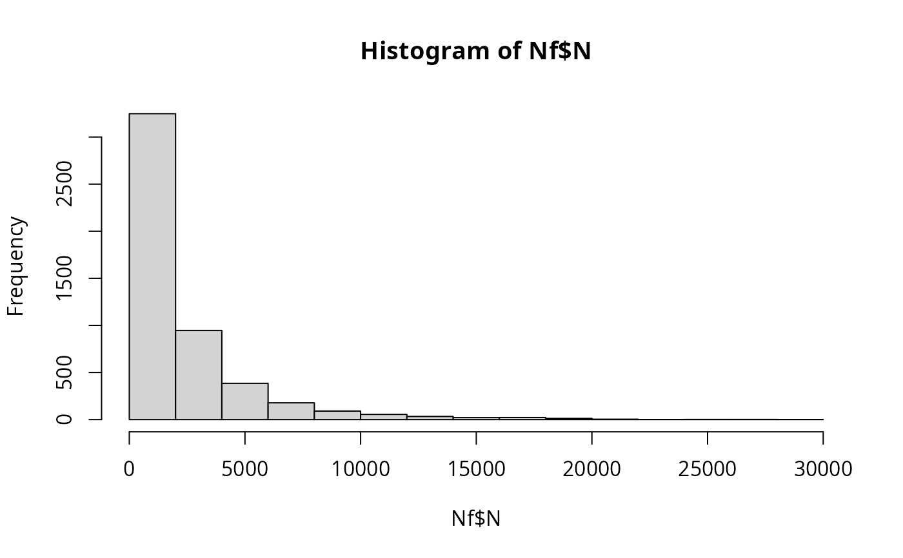

The fvPortioning() function represents the portioning of a pack of frozen vegetables into a smaller unit. It is assumed that the microbial
cells present in a contaminated pack are distributed into servings following a beta-binomial distribution, although the algorithm only retains
one portion per pack (and not all the portions that can be obtained from a pack). The dispersion factor bPort represents the extent of cell
clustering in the frozen vegetables within the package. The fact that the algorithm takes into account that a contaminated pack can produce a
non-contaminated portion, enables the estimation of the prevalence of contaminated portions. It is assumed that the dispersion parameter and
the number of portions (that can be obtained from a pack) are independent of the microbial numbers.
Usage
fvPortioning(
data = list(),
nLots = NULL,
sizeLot = NULL,
servingSize,
unitSize = NULL,
bPort
)Arguments
- data
a list of:
N(
CFU) A matrix of sizenLotslots bysizeLotunits representing the numbers of L. monocytogenes per pack before handling at home;ProbUnitPosProbability of (tested) individual lots being contaminated (vector);
PMean prevalence of contaminated lots (scalar).
- nLots
Number of lots sampled or size of the Monte Carlo simulation (scalar).
- sizeLot
Number of units or portions produced in a lot (scalar).
- servingSize
(
g) is the portion taken from a pack, which will later equals to the serving size (scalar or vector).- unitSize
(
g) is the weight of a pack of frozen vegetables (scalar).- bPort
dispersion factor of cells within the package (scalar or vector).
Value
A list of three elements:
N(
CFU) A matrix of sizenLotslots bysizeLotunits representing the numbers of L. monocytogenes in the portions of frozen vegetables.ProbUnitPosLot-specific probability of contaminated portions or servings (vector).
PMean prevalence of contaminated portions or servings (scalar).
Note
A dispersion factor \(bPort=1\) represents moderate clustering of cells Nauta2005;textualqraLm in the frozen vegetables within the package.
Author
Ursula Gonzales-Barron ubarron@ipb.pt and Regis Pouillot rpouillot.work@gmail.com
Examples
dat <- Lot2LotGen(
nLots = 50,
sizeLot = 100,
unitSize = 500,
betaAlpha = 0.5112,
betaBeta = 9.959,
C0MeanLog = 1.023,
C0SdLog = 0.3267,
propVarInter = 0.7
)
Nf <- fvPortioning(dat, servingSize = 150, unitSize = 500, bPort = 1)
str(Nf)
#> List of 12
#> $ Lot2LotGenParameters:List of 9
#> ..$ nLots : num 50
#> ..$ sizeLot : num 100
#> ..$ unitSize : num 500
#> ..$ betaAlpha : num 0.511
#> ..$ betaBeta : num 9.96
#> ..$ C0MeanLog : num 1.02
#> ..$ C0SdLog : num 0.327
#> ..$ propVarInter: num 0.7
#> ..$ Poisson : logi FALSE
#> $ lotMeans : num [1:50] 2.36 7.46 1.84 12.92 5.1 ...
#> $ unitsCounts : num [1:5000] 3.74 1.255 4.273 0.181 18.833 ...
#> $ N : num [1:50, 1:100] 2729 530 983 2388 5954 ...
#> $ ProbUnitPos : num [1:50] 0.03465 0.05987 0.10991 0.00192 0.07998 ...
#> $ P : num 0.0392
#> $ betaGen : num [1:50] 0.01996 0.06012 0.12523 0.00213 0.11932 ...
#> $ nLots : num 50
#> $ sizeLot : num 100
#> $ unitSize : num 500
#> $ unitsServing : num [1:5000] 12.467 4.183 14.244 0.604 62.777 ...
#> $ servingSize : num 150
#> - attr(*, "class")= chr "qraLm"
hist(Nf$N) # histogram of microbial cells in contaminated servings
